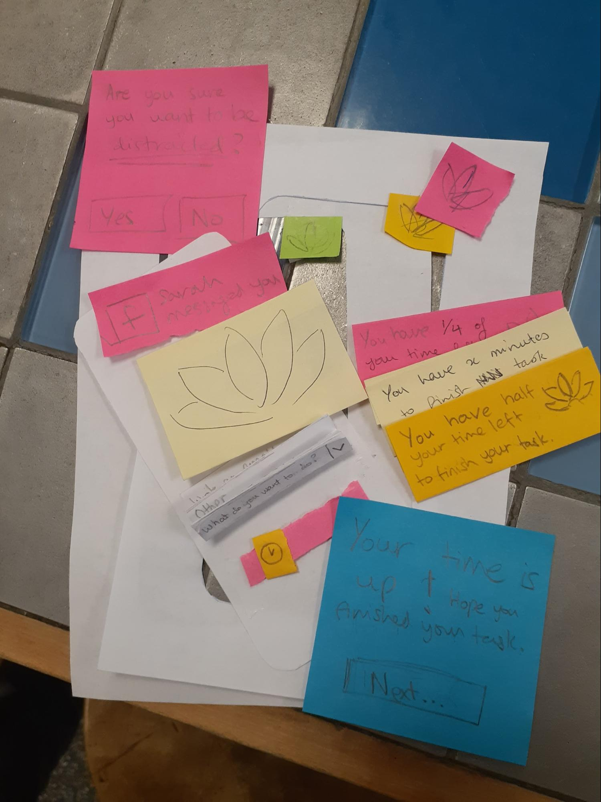
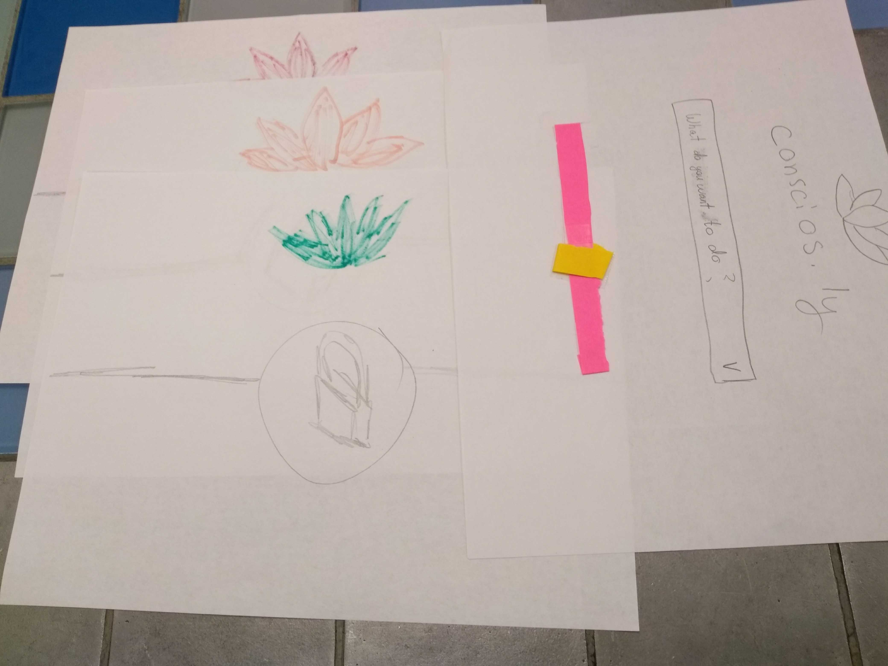
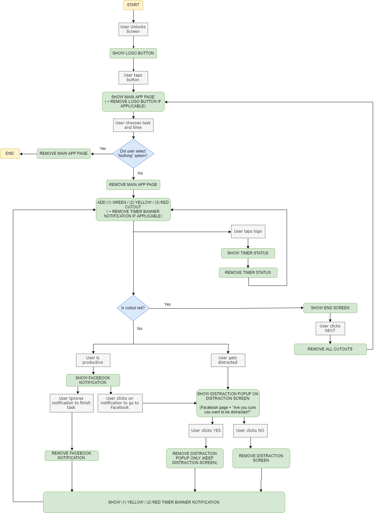
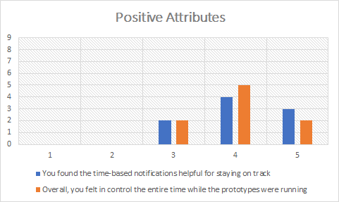
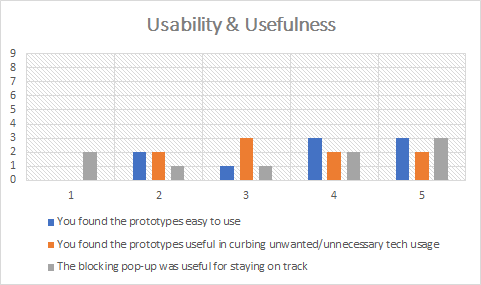
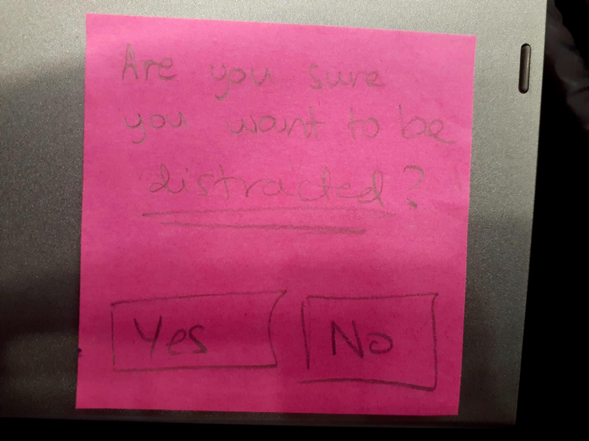

Low-fidelity Prototype
Design concepts
In the first phase of the project, we observed potential users, created personas and use case scenarios, and developed a high-level design of our application. This phase of the project involves us converting user needs into application requirements. To achieve this, we started by sketching sample user interfaces that contain the high-level concepts of the requirements.
Our main idea is to notify users (without blocking access) whenever they use distractive applications (like Facebook, Instagram, etc.), with the aim of teaching them restraint so that they can stick to focusing on their real goal. We implemented the 10-plus-10 method of sketching to generate 20 different sketches. During the first part of the process (the first ten sketches), all members of the group independently created sketches of the main application screens and then shared them. We collectively reviewed the different ideas, and went on to merge some sketches and discard redundant sketches. Once we were down to one sketch, we drew ten more sketches; this time with only slight feature variations of the selected design. This method allowed us to generate a wider variety of concepts and develop a deep understanding of the design challenge, what works, and what doesn’t. For example, Figure 1 (voice-to-text technology) would not be feasible as a standalone design, as we wanted this application to be able to be used in quiet working spaces.
Note that because we are attempting to develop a cross-platform system - a need that was identified during user observation - we had to draw sketches for both the desktop and mobile versions of the system.

Prototypes
- Widget: This design will have a small widget over-laying the user’s screen. The motivation for this prototype is to have a visual reminder of the user’s task presented to them at all times. By gradually changing the color of the visual reminder, we can also instantaneously convey the amount of time remaining and create a sense of urgency should the user become distracted. For our widgets, we have chosen to use the traffic light colour scheme that is often used in smartphones to convey battery percentage: green for “full” (i.e. the user still has a large percentage of their time left to complete their task), yellow after the halfway mark, and red after the 3/4 mark. At the halfway and 3/4 marks, a banner notification will also appear, reminding the user of the time they have left.
- Fullscreen Blocking: This design has no visible elements on the screen beyond the initial prompt to set the task. The motivation for this prototype is to see whether sporadic, strong (i.e blocking) notifications are more effective at curbing unwanted behaviour, than the constantly present visual reminder employed by the widget prototype. In this prototype, instead of banner time notifications, a full-page popup appears on the screen with the logo in the respective time-based colour as described in the prototype above. The user would have to click on a button to make the notification disappear; i.e. it cannot be ignored.


Usability Goals and Benchmark Tasks
- The system should be effective at curbing disruptive user behaviour As previously stated, our goal is not to completely block out all sources of distractions, but to provide an effective mechanism for aiding the user in minimizing their disruptive behaviour.This implies that from the onset, our prototype should be able to at least slightly curb disruptive tech usage.
- The system should be non-intrusive There is a certain sweet-spot between the system providing enough friction to curb unwanted user behaviour, and providing too much friction to the point it becomes a hindrance. The multi-tasker and utilitarian personas are particularly prone to uninstalling the system if they feel it slows them down. The prototype should aim to hit, or at the very least help identify, that ideal level of intrusiveness.
- The user should feel empowered after using the system In order to ensure continued long-term use, it is preferable to evoke positive feelings rather than negative ones - i.e feelings of satisfaction and self-control should dominate feelings of guilt and regret. The relaxer persona is prone to uninstall the system if using it disrupts their leisure time.
- The user should be able to form a conceptual model of how the system works from the first use Being unable to grasp the “rules” by which the system operates - i.e when the distraction prompt appears, why the widget changes color, and so on will hinder the overall effectiveness of the system as the majority of functionality is user driven. Moreover, it may lead to a frustrating experience when the user’s conceptual model does not match what the system is actually doing.
|
Task |
Association to goal(s) |
|
Select a task representative of their intended goals |
Related to goals 1, 3, 4: A dropdown list of predefined tasks are shown to the user. The functionality of this dropdown should be apparent to the user, however it is possible that they question where the tasks come from (at which point the observer may clarify) |
|
Set a time representative of the actual time they will take to complete the task |
Related to all goals: A simple slider for setting the time. The functionality of this slider should be apparent to the user. It also serves to test the key assumption that a user will select a time representative of the actual time they spent on the task, as subsequent functions (i.e the half-way notification) rely on having a good reasonable time estimate |
|
Select an option when navigating away from their main task |
Related to goals 2, 3: A pop-up will appear on the user’s screen when they navigate to an app or browser they shouldn’t be on. The pop-up will simply ask the user whether they wish to go to a potential source of distraction. Selecting “Yes” allows the user to continue what they were doing, and pressing “No” takes them back to the app they were on before navigating away |
|
Stop using the app during a session |
Related to goals 2, 4: The user will click on the widget or the task-tray icon to access the applications’ menu and exit the application. Despite the lack of visual prompts the location of the exit button should be something that the user readily infers |
|
Stop using the app after time is up |
Related to goals 3, 4: When the time limit set by the user ends, they will be prompted to start a new task from a menu, and one of the options presented is “Nothing; exit”. The user should be able to select this option easily. |
|
Start a new task after completing previous task |
Related to goals 1, 3, 4: Upon completing their task, the user will click on the widget or task-tray icon and launch a new task |
|
Start a new task via the automatic prompt |
Related to goals 2, 3, 4: When the time limit set by the user ends, they will be prompted to start their next task. The user should be able to identify this menu from the initial interaction with the system and continue setting tasks |
Test Materials
- User Consent Form
- Observer Briefing Document
- User Introduction Document
- Pre-Test Questionnaire
- Training Document
- Test Manual (Script + Test Tasks)
- Data Collection Sheet
- Post-Test Questionnaire
Testing Procedure
We carried out tests with 9 users, each user testing both of the prototypes we had created. In testing our lo-fi paper prototypes, we implemented the “Wizard of Oz” technique where one of us acted as the app itself; responding to the user’s actions (e.g. tapping the screen, swiping, etc.) by presenting a paper notification, popup, or new screen. Our pre- and post-test procedures consisted of pre- and post-test questionnaires that the user filled out, as well as a brief introduction and consent form. Though our post-test questionnaire contained short-answer questions wherein the user could give us feedback and suggest additional features, we also discussed this with the users in person as they filled it out, as we felt that it was easier for them to convey their real thoughts that way.
Prior to carrying out the tests, we created a test script in the form of a flowchart, with different paths depicting different scenarios the user may run through. In the flowchart (pictured below), the rounded green rectangles contain actions for the Wizard of Oz to take, the grey rectangles contain actions the user might take, and the blue diamonds contain conditions that determine which action of multiple that the Wizard of Oz should perform when there is a split in the path. There are also splits in the flow that appear without the use of blue diamonds, signifying the different paths that a user may take of their own choice. Note that in the flowchart, the next steps seem instantaneous - this is specifically for testing purposes, to help assess different aspects of the application; in real life the next steps may take more time to happen, or may never happen at all in that session (e.g. a user receiving a Facebook notification while trying to work). Also note that the steps for Prototype 2 are a subset of those for Prototype 1; we used the same script for both tests and skipped steps where necessary (i.e. skipped the widget steps for Prototype 2).

As well as making observations during and after the tests, we also recorded a video of one of the users running through Prototype 1(too large to include in the notebook)
Quantitative Test Results
During the test, we measured how many users succeeded in completing each of our benchmark tasks mentioned in the previous section. In particular we noticed that users were able to perform all the tasks which were prompted of them, however failed to acknowledge the capabilities of the widget (in Prototype 1). Nonetheless, after the users discovered tapping on the widget for the first time, they easily understood that they could do it again to perform the same tasks.
|
Task |
Definition of Success (within 5 seconds) |
Results |
|
Select a task representative of their intended goals |
User chooses a task from the dropdown menu on the app’s main page |
9 people |
|
Set a time representative of the actual time they will take to complete the task |
User correctly interprets the slider feature and sets a time reflective of the task they have chosen |
8 people |
|
Select an option when navigating away from their main task |
User selects one of the two options when the distraction pop-up appears |
9 people |
|
Stop using the app during a session |
User taps on the widget then on the exit button to exit the app |
3 people |
|
Stop using the app after time is up |
User selects “Nothing; exit” from the task menu |
5 people |
|
Start a new task after completing previous task |
User taps on the widget to start a new task when they are done with the previous one |
3 people |
|
Start a new task via the automatic prompt |
User selects a new task after being notified that their time is up |
9 people |
Qualitative Test Results (General Reactions & Suggested Changes)

In general, users seemed to feel that the app’s time-based notifications were helpful for staying on track, and that they felt in control of the app. This was pleasing to find out, as our intention was to develop good habits and restraint in the user.

We received mixed feedback (though leaning on the positive side) regarding ease of use of the app, as well as its usefulness, with one of the features in particular receiving a significant amount of attention: the distraction popup.

The distraction popup is a message reading “Are you sure you want to be distracted?” that appears overlaid on the user’s screen whenever an app that they had marked as distracting (during the app setup) was opened during an active session of the app - i.e. a session in which a user has chosen a task they would like to get done in a certain amount of time. Users seemed to like this popup, however, we received a large amount of qualitative feedback stating that it was “too guilt free” and “too easy to get rid of”. One user suggested that the frequency of the pop up notifications should be increased; i.e. that if the user answers “yes” and continues on to the distraction, if they remain on that app for a certain period of time, the popup should reappear. In contrast, another user brought up a very interesting point about how when something is repetitive, it becomes susceptible to fading into the background/eventually being akin to white noise: “[it was] too easy to just click yes especially after the message has come up a few times”. This is something we will have to think about going forward; how to find a balance between a popup that doesn’t show up enough, and one that shows up too often that it becomes ignorable, as both ends of the spectrum result in the feature being ineffective.
Suggested Additional Features
Some interesting features that users suggested we add to the prototype are as follows:
- Add a score feature for gamification (e.g. daily stats/scores that show if the user is getting better at avoiding distractions)
- Add a fun daily “zodiac” feature; a short description of a creature that the user acted like based on their interactions with the app that day (e.g. a person who kept opening social media apps that day would be a “social butterfly, and would get to read a short description about their traits as a “social butterfly)
- Add TODO list so users don’t have to enter tasks one at a time
- Add a congratulatory message when the user avoids a distraction